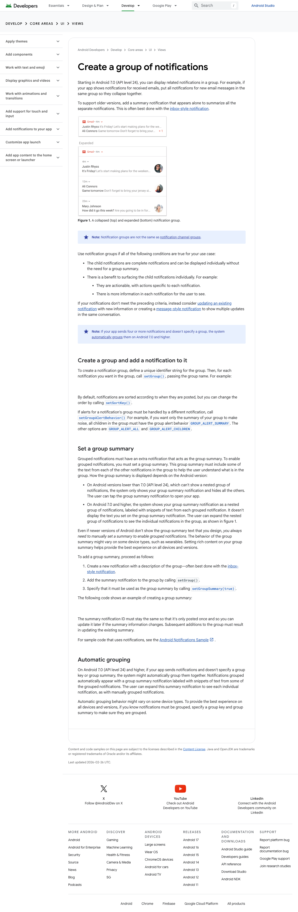
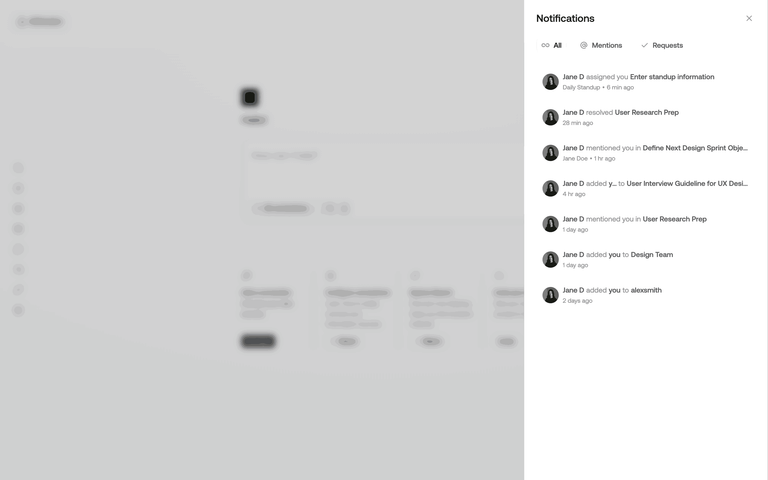

거래 카드끼리 실제로 겹치기
시각적으로는 재미있지만 금액·방향이 가려지고, 무엇을 클릭하는지 불명확하며 키보드·스크린리더 순서가 어려워집니다.
KRW.O · Follow-up design review
단, 내부자 거래는 여러 카드를 포개는 장식이 아니라 하나의 큰 요약 카드 안에 완전한 거래 행을 쌓는 구조로 만드는 것이 좋습니다.
추천안: 모든 최상위 피드 항목은 큰 카드로 통일하고, 내부자 거래 카드는 상단 요약 + 항상 보이는 상위 3건 + “나머지 N건 펼치기”로 구성합니다. 카드 뒤의 얇은 2개 레이어는 묶음이라는 시각적 단서로만 사용합니다.
Current state

Three stack variants
시각적으로는 재미있지만 금액·방향이 가려지고, 무엇을 클릭하는지 불명확하며 키보드·스크린리더 순서가 어려워집니다.
요약은 크게 유지하면서 상위 거래 3건을 모두 읽을 수 있습니다. 하단에 얇은 레이어를 보여 묶음 느낌만 더합니다.
모바일에는 흥미롭지만 다음 거래가 숨겨집니다. 금융 정보에서는 좌우 스와이프보다 펼치기가 더 예측 가능합니다.
Recommended anatomy
┌────────────────────────────────────────┐
│ 내부자 거래 · 오늘 방금 │
│ 27건 · 매수 3 · 매도 24 │
│ 보유 2 · 관심 4 │
│ │
│ AAPL 매도 $12.7M 임원 · 10b5-1 표시 │
│ CRWV 매도 $24.9M 임원 · 계획 미표시 │
│ XYZ 매수 $1.8M 이사 · 최근 리서치 │
│ │
│ [27건 모두 보기 →] [확인 완료] │
└────────────────────────────────────────┘
└────────────────────────────────────┘
└────────────────────────────────┘
Grouping rules
| 상황 | 표시 | 이유 |
|---|---|---|
| 한 기업에서 24시간 안에 여러 내부자가 거래 | 기업별 큰 스택 카드 | 클러스터 매수·매도 자체가 하나의 해석 단위가 됨 |
| 카탈로그 전역의 일반 Form 4 | 오늘의 내부자 거래 큰 카드 | 상위 3건만 보이고 나머지는 펼침 |
| 보유 기업, 대규모 매수, urgent 판정 | 묶음에서 분리된 단독 큰 카드 | 다른 거래에 묻히면 안 됨 |
| 소액·일상적 매도·10b5-1 표시 | 묶음 내부 하위 행 | 정보는 보존하되 피드 지면은 과점하지 않음 |
핵심 규칙: “큰 카드”는 화면 면적이 아니라 하나의 이야기 단위입니다. 중요 거래 하나도 이야기이고, 반복 거래 27건의 묶음도 하나의 이야기입니다.
Reference evidence


Android는 각 하위 항목이 독립적으로 이해되고 개별 행동 가치가 있을 때 그룹을 사용하라고 안내합니다. 내부자 거래의 티커·매수/매도·금액·원문 링크는 이 조건에 잘 맞습니다. Android grouped notifications
Decision